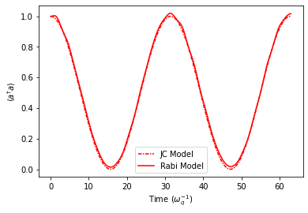
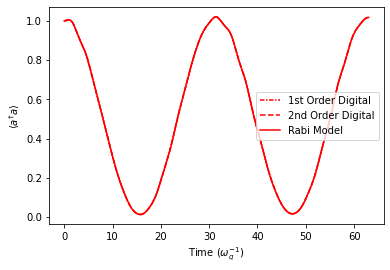
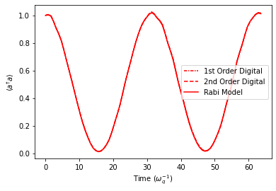
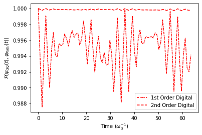
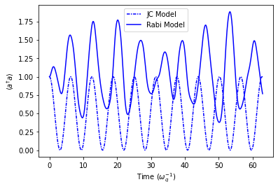
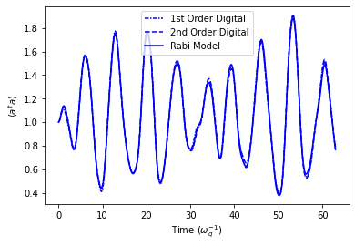
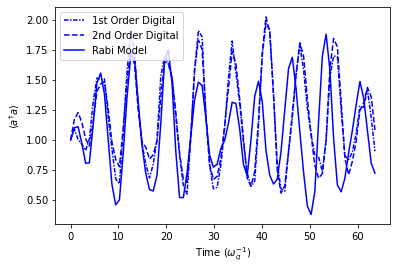
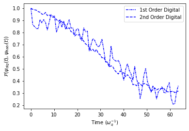

[1]:
import quanguru as qg
import numpy as np
import matplotlib.pyplot as plt
20 - Simultaneous Simulation JC and Rabi models and 1st and 2nd order DQSs of Rabi#
[2]:
# parameters for the Hamiltonian
qubitFreq = 1
cavityFreq = 1
couplingFreq = 0.1
cavityDim = 5
# parameters for the evolution
totalTime = 2*(np.pi/couplingFreq)
timeStep = 0.05
[3]:
JCSystem = qg.Qubit(frequency=qubitFreq, alias='QubJC') + qg.Cavity(dimension=cavityDim, frequency=cavityFreq, alias='CavJC')
RabiSystem = JCSystem.copy()
JCCoupling = qg.QTerm(qSystem=JCSystem,
subSys=[
JCSystem.createTerm(qSystem=["CavJC", "QubJC"], operator=[qg.destroy, qg.sigmap]),
JCSystem.createTerm(qSystem=["QubJC", "CavJC"], operator=[qg.sigmam, qg.create])
],
frequency=couplingFreq,
alias='jc')
RabiCoupling = RabiSystem.Rabi(couplingFreq)
[4]:
JCStep1 = qg.freeEvolution(ratio=0.5, system=JCSystem)
bitFlip = qg.SpinRotation(system="QubJC", angle=np.pi, rotationAxis = 'x')
JCStep2 = qg.freeEvolution(system=JCSystem)
JCStep2.createUpdate(system=["QubJC", "CavJC"], key='frequency', value=0)
AJCStep = qg.qProtocol(steps=[bitFlip, JCStep2, bitFlip])
digitalRabi1stOrder = qg.qProtocol(
system=JCSystem,
steps=[JCStep1, JCStep1, AJCStep] )
digitalRabi2ndOrder = qg.qProtocol(
system=JCSystem,
steps=[JCStep1, AJCStep, JCStep1] )
[5]:
# simulation contains the systems, protocol, and sweeps
simulation = qg.Simulation()
simulation.addSubSys(RabiSystem)
simulation.addSubSys(JCSystem)
simulation.addSubSys(JCSystem, digitalRabi1stOrder)
simulation.addSubSys(JCSystem, digitalRabi2ndOrder)
# simulation stores the evolution parameters
simulation.stepSize = timeStep
simulation.totalTime = totalTime
# digitalRabi2ndOrder.totalTime = totalTime/2
# initial state of the simulation
simulation.initialStateSystem = JCSystem
simulation.initialState = [1, 1]
# JCSystem.initialState = [1, 1]
[6]:
# cavity dimension sweep
cavDimSweep = simulation.Sweep.createSweep(
system=["Cavity1", "Cavity2"],
sweepKey='dimension',
sweepList=[5, 10] )
# coupling strength sweep
couplingSweep = simulation.Sweep.createSweep(
system=[JCCoupling, RabiCoupling],
sweepKey="frequency",
sweepList = [0.1, 0.5],
multiParam=False)
# time step sweep
timeStepSweep = simulation.Sweep.createSweep(
system=simulation,
sweepKey = "stepSize",
multiParam=True)
timeStepSweep.sweepList = [0.05*np.pi, 0.25*np.pi]
[7]:
# calculate the desired results and store
def compute(sim, args):
num = sim.getByNameOrAlias('CavJC')._freeMatrix
stateRabi = args[0]
stateJC = args[1]
stateDig1 = args[2]
stateDig2 = args[3]
res = sim.qRes
res.result = 'nRabi', qg.expectation(num, stateRabi)
res.result = 'nJC', qg.expectation(num, stateJC)
res.result = 'nDig1', qg.expectation(num, stateDig1)
res.result = 'nDig2', qg.expectation(num, stateDig2)
res.result = 'fidJC', qg.fidelityPure(stateRabi, stateJC)
res.result = 'fidDig1', qg.fidelityPure(stateRabi, stateDig1)
res.result = 'fidDig2', qg.fidelityPure(stateRabi, stateDig2)
simulation.compute = compute
# do not store the states
simulation.delStates = True
simulation.run(p=False)
[7]:
[]
[8]:
timePoints = [[i*tStep for i in range(int(totalTime/tStep)+2)] for tStep in timeStepSweep.sweepList]
[11]:
cavDimInd = 0
stepSizeInd = 0
ResFid = simulation.qRes.results
plt.plot(timePoints[stepSizeInd], ResFid['nJC'][cavDimInd][stepSizeInd], linestyle=(0, (3, 1, 1, 1)), color='r', label='JC Model')
plt.plot(timePoints[stepSizeInd], ResFid['nRabi'][cavDimInd][stepSizeInd], linestyle='-', color='r', label='Rabi Model')
plt.legend()
plt.xlabel(r"Time ($\omega_{q}^{-1}$)")
plt.ylabel(r"$\langle a^{\dagger}a \rangle$")
[11]:
Text(0, 0.5, '$\\langle a^{\\dagger}a \\rangle$')

[12]:
cavDimInd = 0
stepSizeInd = 0
ResFid = simulation.qRes.results
plt.plot(timePoints[stepSizeInd], ResFid['nDig1'][cavDimInd][stepSizeInd], linestyle=(0, (3, 1, 1, 1)), color='r', label='1st Order Digital')
plt.plot(timePoints[stepSizeInd], ResFid['nDig2'][cavDimInd][stepSizeInd], linestyle='--', color='r', label='2nd Order Digital')
plt.plot(timePoints[stepSizeInd], ResFid['nRabi'][cavDimInd][stepSizeInd], linestyle='-', color='r', label='Rabi Model')
plt.legend()
plt.xlabel(r"Time ($\omega_{q}^{-1}$)")
plt.ylabel(r"$\langle a^{\dagger}a \rangle$")
[12]:
Text(0, 0.5, '$\\langle a^{\\dagger}a \\rangle$')

[13]:
cavDimInd = 0
stepSizeInd = 0
ResFid = simulation.qRes.results
plt.plot(timePoints[stepSizeInd+1], ResFid['nDig1'][cavDimInd][stepSizeInd+1], linestyle=(0, (3, 1, 1, 1)), color='r', label='1st Order Digital')
plt.plot(timePoints[stepSizeInd+1], ResFid['nDig2'][cavDimInd][stepSizeInd+1], linestyle='--', color='r', label='2nd Order Digital')
plt.plot(timePoints[stepSizeInd+1], ResFid['nRabi'][cavDimInd][stepSizeInd+1], linestyle='-', color='r', label='Rabi Model')
plt.legend()
plt.xlabel(r"Time ($\omega_{q}^{-1}$)")
plt.ylabel(r"$\langle a^{\dagger}a \rangle$")
[13]:
Text(0, 0.5, '$\\langle a^{\\dagger}a \\rangle$')

[15]:
cavDimInd = 0
stepSizeInd = 0
markEvery = 50
ResFid = simulation.qRes.results
plt.plot(timePoints[stepSizeInd+1], ResFid['fidDig1'][cavDimInd][stepSizeInd+1], linestyle=(0, (3, 1, 1, 1)), color='r', label='1st Order Digital')
plt.plot(timePoints[stepSizeInd+1], ResFid['fidDig2'][cavDimInd][stepSizeInd+1], linestyle='--', color='r', label='2nd Order Digital')
plt.legend()
plt.xlabel(r"Time ($\omega_{q}^{-1}$)")
plt.ylabel(r"$\mathcal{F}(\psi_{dig}(t), \psi_{Rabi}(t))$")
[15]:
Text(0, 0.5, '$\\mathcal{F}(\\psi_{dig}(t), \\psi_{Rabi}(t))$')

[16]:
cavDimInd = 0
stepSizeInd = 0
ResFid = simulation.qRes.results
plt.plot(timePoints[stepSizeInd], ResFid['nDig1'][cavDimInd][stepSizeInd], linestyle=(0, (3, 1, 1, 1)), color='r', label='1st Order Digital')
plt.plot(timePoints[stepSizeInd], ResFid['nDig2'][cavDimInd][stepSizeInd], linestyle='--', color='r', label='2nd Order Digital')
plt.plot(timePoints[stepSizeInd], ResFid['nRabi'][cavDimInd][stepSizeInd], linestyle='-', color='r', label='Rabi Model')
plt.legend()
plt.xlabel(r"Time ($\omega_{q}^{-1}$)")
plt.ylabel(r"$\langle a^{\dagger}a \rangle$")
[16]:
Text(0, 0.5, '$\\langle a^{\\dagger}a \\rangle$')

[17]:
cavDimInd = 0
stepSizeInd = 0
ResFid = simulation.qRes.results
plt.plot(timePoints[stepSizeInd], ResFid['nJC'][cavDimInd+1][stepSizeInd], linestyle=(0, (3, 1, 1, 1)), color='b', label='JC Model')
plt.plot(timePoints[stepSizeInd], ResFid['nRabi'][cavDimInd+1][stepSizeInd], linestyle='-', color='b', label='Rabi Model')
plt.legend()
plt.xlabel(r"Time ($\omega_{q}^{-1}$)")
plt.ylabel(r"$\langle a^{\dagger}a \rangle$")
[17]:
Text(0, 0.5, '$\\langle a^{\\dagger}a \\rangle$')

[18]:
cavDimInd = 0
stepSizeInd = 0
ResFid = simulation.qRes.results
plt.plot(timePoints[stepSizeInd], ResFid['nDig1'][cavDimInd+1][stepSizeInd], linestyle=(0, (3, 1, 1, 1)), color='b', label='1st Order Digital')
plt.plot(timePoints[stepSizeInd], ResFid['nDig2'][cavDimInd+1][stepSizeInd], linestyle='--', color='b', label='2nd Order Digital')
plt.plot(timePoints[stepSizeInd], ResFid['nRabi'][cavDimInd+1][stepSizeInd], linestyle='-', color='b', label='Rabi Model')
plt.legend()
plt.xlabel(r"Time ($\omega_{q}^{-1}$)")
plt.ylabel(r"$\langle a^{\dagger}a \rangle$")
[18]:
Text(0, 0.5, '$\\langle a^{\\dagger}a \\rangle$')

[19]:
cavDimInd = 0
stepSizeInd = 0
ResFid = simulation.qRes.results
plt.plot(timePoints[stepSizeInd+1], ResFid['nDig1'][cavDimInd+1][stepSizeInd+1], linestyle=(0, (3, 1, 1, 1)), color='b', label='1st Order Digital')
plt.plot(timePoints[stepSizeInd+1], ResFid['nDig2'][cavDimInd+1][stepSizeInd+1], linestyle='--', color='b', label='2nd Order Digital')
plt.plot(timePoints[stepSizeInd+1], ResFid['nRabi'][cavDimInd+1][stepSizeInd+1], linestyle='-', color='b', label='Rabi Model')
plt.legend()
plt.set_xlabel(r"Time ($\omega_{q}^{-1}$)")
plt.set_ylabel(r"$\langle a^{\dagger}a \rangle$")
---------------------------------------------------------------------------
AttributeError Traceback (most recent call last)
/Volumes/T7/Dropbox/Codes/QuanGuru/docs/source/classes/Tutorials/1_Qubit/20_SimultaneousSimulationRabiJCandDigitalProtocols.ipynb Cell 17' in <cell line: 12>()
<a href='vscode-notebook-cell:/Volumes/T7/Dropbox/Codes/QuanGuru/docs/source/classes/Tutorials/1_Qubit/20_SimultaneousSimulationRabiJCandDigitalProtocols.ipynb#ch0000015?line=7'>8</a> plt.plot(timePoints[stepSizeInd+1], ResFid['nRabi'][cavDimInd+1][stepSizeInd+1], linestyle='-', color='b', label='Rabi Model')
<a href='vscode-notebook-cell:/Volumes/T7/Dropbox/Codes/QuanGuru/docs/source/classes/Tutorials/1_Qubit/20_SimultaneousSimulationRabiJCandDigitalProtocols.ipynb#ch0000015?line=9'>10</a> plt.legend()
---> <a href='vscode-notebook-cell:/Volumes/T7/Dropbox/Codes/QuanGuru/docs/source/classes/Tutorials/1_Qubit/20_SimultaneousSimulationRabiJCandDigitalProtocols.ipynb#ch0000015?line=11'>12</a> plt.set_xlabel(r"Time ($\omega_{q}^{-1}$)")
<a href='vscode-notebook-cell:/Volumes/T7/Dropbox/Codes/QuanGuru/docs/source/classes/Tutorials/1_Qubit/20_SimultaneousSimulationRabiJCandDigitalProtocols.ipynb#ch0000015?line=12'>13</a> plt.set_ylabel(r"$\langle a^{\dagger}a \rangle$")
AttributeError: module 'matplotlib.pyplot' has no attribute 'set_xlabel'

[22]:
cavDimInd = 0
stepSizeInd = 0
markEvery = 50
ResFid = simulation.qRes.results
plt.plot(timePoints[stepSizeInd+1], ResFid['fidDig1'][cavDimInd+1][stepSizeInd+1], linestyle=(0, (3, 1, 1, 1)), color='b', label='1st Order Digital')
plt.plot(timePoints[stepSizeInd+1], ResFid['fidDig2'][cavDimInd+1][stepSizeInd+1], linestyle='--', color='b', label='2nd Order Digital')
plt.legend()
plt.xlabel(r"Time ($\omega_{q}^{-1}$)")
plt.ylabel(r"$\mathcal{F}(\psi_{dig}(t), \psi_{Rabi}(t))$")
[22]:
Text(0, 0.5, '$\\mathcal{F}(\\psi_{dig}(t), \\psi_{Rabi}(t))$')
